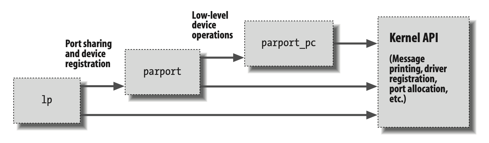

内核符号表
我们已经看到了insmod如何根据公共内核符号表解析未定义的符号。这个符号表包含了实现模块化驱动程序所需的全局内核项——函数和变量的地址。当模块加载时，任何由模块导出的符号都会成为内核符号表的一部分。
通常情况下，一个模块会实现自己的功能，而不需要导出任何符号。然而，每当其他模块可能会使用这些符号时，你就需要导出符号。
新的模块可以使用你模块导出的符号，同时你也可以将新的模块叠加在其他模块之上。模块叠加在主线内核源代码中也是有实现的：例如，msdos文件系统依赖于fat模块导出的符号，每个输入的USB设备模块也会叠加在usbcore和input模块之上。
模块叠加在复杂项目中非常有用。如果某个新的抽象作为设备驱动程序实现，它可能会提供一个用于硬件特定实现的接口。例如，Video for Linux驱动集被拆分为一个通用模块，导出给低层次设备驱动程序使用的符号。根据你的设置，你可以加载通用视频模块和针对已安装硬件的特定模块。并行端口支持和各种可连接设备的支持也是以相同方式处理的，USB内核子系统也是如此。并行端口子系统中的叠加关系如图2-2所示，箭头表示模块之间以及与内核编程接口之间的通信。  图2-2 并行端口驱动模块的叠加
使用叠加模块时，了解modprobe工具非常有帮助。正如我们之前所描述的，modprobe的功能与insmod类似，但它还会加载任何由你想要加载的模块所依赖的其他模块。因此，单个modprobe命令有时可以替代多次使用insmod（尽管在从当前目录加载你自己的模块时，你仍然需要使用insmod，因为modprobe只会在标准安装的模块目录中查找）。
利用叠加将模块拆分成多个层次，可以通过简化每一层的功能来帮助减少开发时间。这类似于我们在第1章中讨论的机制与策略的分离。
Linux内核头文件提供了一种方便的方式来管理符号的可见性，从而减少命名空间污染（即命名空间中出现与内核其他地方定义的名称冲突的名称）并促进信息隐藏。如果你的模块需要导出符号以供其他模块使用，可以使用以下宏：
EXPORT_SYMBOL(name);
EXPORT_SYMBOL_GPL(name);
这两个宏中的任何一个都会使给定的符号在模块外部可用。_GPL版本仅使符号对GPL许可的模块可用。符号必须在模块文件的全局部分导出，即在任何函数之外，因为这些宏展开为一个特殊用途变量的声明，该变量预计会在全局范围内访问。这个变量存储在模块可执行文件的一个特殊部分（“ELF节”）中，内核在加载时会利用它来查找模块导出的变量。（有兴趣的读者可以查看<linux/module.h>了解详细信息，尽管这些细节并非让事情运作所必需的。）